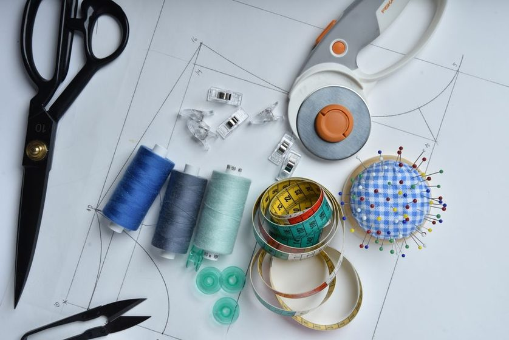

Dart Rotation Explained: Moving Shaping Without Losing Fit
Shaping in a bodice block can move almost anywhere on the pattern without losing its function — this note traces the pivot points that make dart rotation predictable.
The first time I moved a waist dart up to the shoulder, I braced for the pattern to come out smaller. It didn't. The outline changed shape along two edges, the waistline went flat and clean, a wedge opened at the shoulder seam, and the finished muslin fit exactly as it had before. That was the moment the whole thing stopped being a trick I copied from a book and started being something I could reason about. A dart is not a decoration you place. It is a quantity of shaping that already exists in the block, and rotation just decides which seam pays for it.

Pivot lines drawn from the apex out to the shoulder, the side seam, and the waist. The wedge is the same wedge each time — only the seam it opens into changes.
A Dart Is Stored Shaping, Not a Seam
Cloth comes off the bolt flat. A body is not. Somewhere between the two, a certain amount of fabric has to be removed to let the flat piece cup over a curve, and in a bodice most of that removal happens around the bust. The dart is where you park it. Close the dart and the paper stops lying flat — it domes. That dome is the point of the exercise.
Because the shaping is a quantity rather than a location, the same block can carry it in a waist dart, a shoulder dart, a French dart running up from the side seam, or four small tucks along a yoke. None of those choices adds or removes room. They only change where the flatness is interrupted.
This is also why a block worth keeping is a block you fitted once. If the shaping quantity is right for your body, every rotation from that point forward inherits the correct amount without further fitting — the argument behind the one-adjustment rule.
You are not drawing a new dart. You are carrying the old one to a different edge and setting it down there.
The Apex Is the Only Fixed Point
Every rotation turns around a single point, and on a bodice front that point is the bust apex — the tip of the cone the shaping builds. Stick an awl or a pin through the apex, and the paper can swing. Whatever seam the legs of the old dart used to sit in closes up as the paper turns; whatever seam you swing toward opens by the same angle.
Two habits make this reliable. Mark the apex clearly on the block, in a different color from the seam lines, so you never have to guess where it is. And draw the new dart line all the way from the seam to the apex before you cut, not partway. A slash that stops short leaves a hinge of paper that fights the rotation and quietly steals a degree or two.
Three Moves: Shoulder, Side Seam, and Split
Take a front block with one waist dart. Here is what happens on paper in each case.
- To the shoulder. Draw a line from the apex to a point on the shoulder seam, usually a third to halfway in from the neck. Cut along it to the apex. Close the waist dart by bringing its legs together; the shoulder line spreads open into a wedge. The waistline is now a smooth curve, the shoulder seam is broken by a dart, and the side seam is untouched.
- To the side seam. Same procedure, new destination: a line from the apex out to the side seam, often a few inches below the armhole. Closing the waist dart opens that line instead. The side seam is now longer at that point than the back side seam, which is normal — the dart take-up restores the match once it is stitched.
- Split into two. Draw both a shoulder line and a waist line to the apex. Close the original dart only partway, letting half its angle escape into the shoulder, and leave the remainder in the waist. Two shallower darts, same total shaping, softer surface.
In every case the outer edges of the block stay where they were, except for the seam that received the wedge. Neck, armhole, and center front do not move. If they do, something slipped.
The dart point stops short of the apex
Rotate to the apex, then shorten. Stitching a dart all the way to the apex tends to produce a hard cone; most people find the surface reads smoother when the stitching stops a short distance before it, with the distance growing as the fabric gets softer and the cup gets fuller. The rotation uses the true apex. Only the sewing line backs off.
The Bubble at the Apex, and How to Catch It on Paper
The common failure is rotating around a point that is not the apex — a pin pushed in a little high, a slash line drawn to the general neighborhood of the bust rather than to the marked point. The pattern still looks plausible. Both darts close. But the shaping now converges somewhere the body does not peak, and the muslin shows a small slack dome sitting near the bust: fabric with nowhere to go, standing away from the surface. Sewers call it a bubble, and it is stubborn, because nothing about the measurements is wrong.
Catch it before cutting cloth. Fold the paper pattern along the new dart legs and pinch them closed with tape, exactly as they will be sewn.
- Close every dart on the paper copy with tape, not pins — pins let the paper cheat.
- Set the closed pattern on a flat table and press the center front down. A correct rotation lifts into a single clean dome centered on the apex mark.
- Look for a second small ripple beside the dome, or a dome whose peak sits away from your apex mark. Either one means the pivot point drifted.
- Check the seam lengths against the untouched block: neck, armhole, and center front should measure the same as before. A changed armhole means the slash crossed a line it should not have.
Test rotations on a paper copy, never the master. Whether the master itself is paper or cloth is a separate decision, and one worth making deliberately — see paper block or cloth sloper.
Where Each Position Tends to Sit Best
Rotation is neutral to fit but not neutral to appearance. The same shaping reads differently depending on how the cloth behaves at the seam that absorbs it.
| Dart position | Tends to suit | Watch out for |
|---|---|---|
| Waist dart | Crisp cottons, linens, anything that holds a pressed fold | Long dart legs show every wobble in the stitching line |
| Shoulder dart | Mid-weight wovens and wools that ease and press well | Sits in a visible spot; stripes and checks break across it |
| Side seam / French dart | Drapey rayons and softer blends where a hidden dart is preferred | Slippery cloth stretches on the bias-ish dart legs unless stay-stitched |
| Two split darts | Fuller cups, or any fabric that resists a sharp single fold | Two chances to miss the apex instead of one |
| Gathers or tucks in place of a dart | Soft, light cloth with good drape | Take-up is harder to control; make a small test piece first |
Keeping the Rotations With the Block
Once you can move shaping freely, the block stops being one pattern and becomes a source for many. That only holds if you can find your way back. Keep the original waist-dart version as the master, unmarked and uncut, and treat each rotation as a copy with the pivot line, the apex, and the date written on it. Label the destination seam in plain words. Six months later, "shoulder, one-third from neck" is worth more than a clever code.
The other half of the discipline is upstream: a rotation is only as honest as the measurements the block came from, taken over the layers you actually wear rather than in bare stocking feet.
A note on how to read this
These are working notes from a home cutting table, written to explain a method rather than to prescribe one. Bodies, cloth, and drafting systems differ, and what settles nicely on one block may need a different pivot on another. Try any rotation on a paper copy and a scrap muslin before it meets fabric you care about.